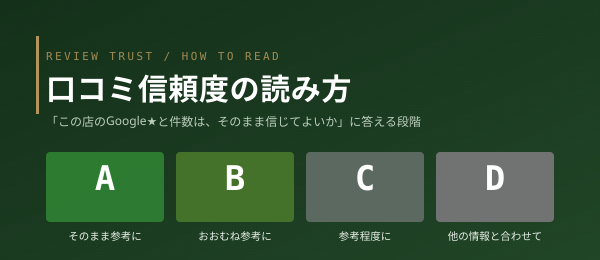

REVIEW TRUST / HOW TO READ
口コミ信頼度の読み方
店舗カードや詳細に出ている「口コミ信頼度 SS〜D」（5段階）は、「この店の Google の★と件数は、そのまま信じてよいか」に答える参考指標です。店の良し悪しの評価ではありません。このページで 1 分で読み方を説明します。仕組みの全部は 口コミ信頼度の作り方 で公開しています。

REVIEW TRUST / HOW TO READ
店舗カードや詳細に出ている「口コミ信頼度 SS〜D」（5段階）は、「この店の Google の★と件数は、そのまま信じてよいか」に答える参考指標です。店の良し悪しの評価ではありません。このページで 1 分で読み方を説明します。仕組みの全部は 口コミ信頼度の作り方 で公開しています。
件数は十分か・★と件数のバランス・直近の口コミの傾向（増え方／全体と一致するか／ばらつき）・評価の分布・第三者メディアの掲載——この 7 項目のうち観測できたものだけで機械的に採点します。観測できなかった項目（データがまだ無い項目）は点数にも分母にも入れません。「検証 n/7項目」として、どれだけ確かめられたかも別に表示します。
口コミ信頼度に含めないもの
店舗詳細には「A 92 / 100 — Google★4.3（182件）は、そのまま参考にできます。」のように、段階・数字・助言文が並びます。その下の「内訳を見る」を開くと、7 項目それぞれの観測事実（例:「直近5件の平均★4.6・全体★4.3（軽微な乖離）」）が並びます。観測できなかった項目は「—（判定保留・採点に含めません）」と表示され、点数として扱いません。
表示に違和感がある場合は editor@nagoya-bites.com 宛にお知らせください。10 営業日以内に確認・補正します。詳しい計算式・段階の閾値・「やらないと決めたこと」は 口コミ信頼度の作り方 で全公開しています。